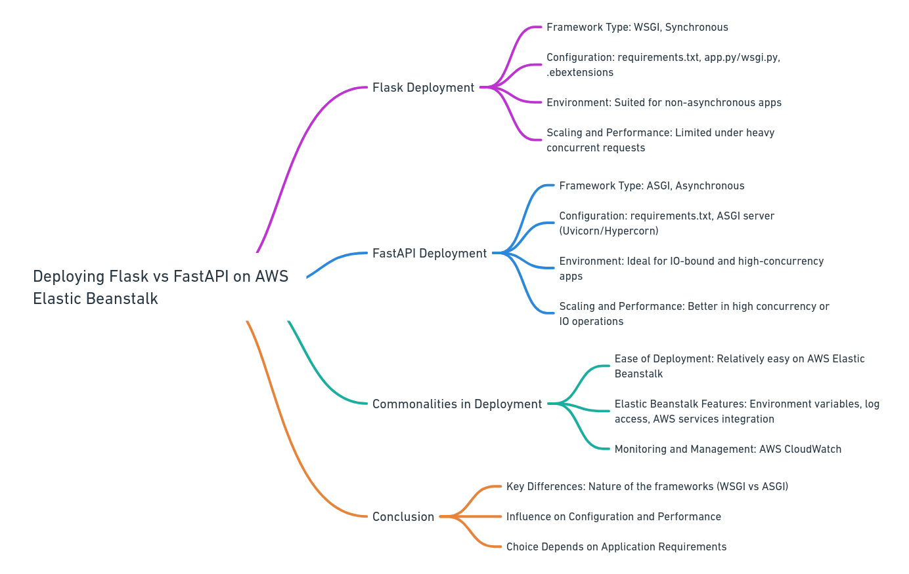
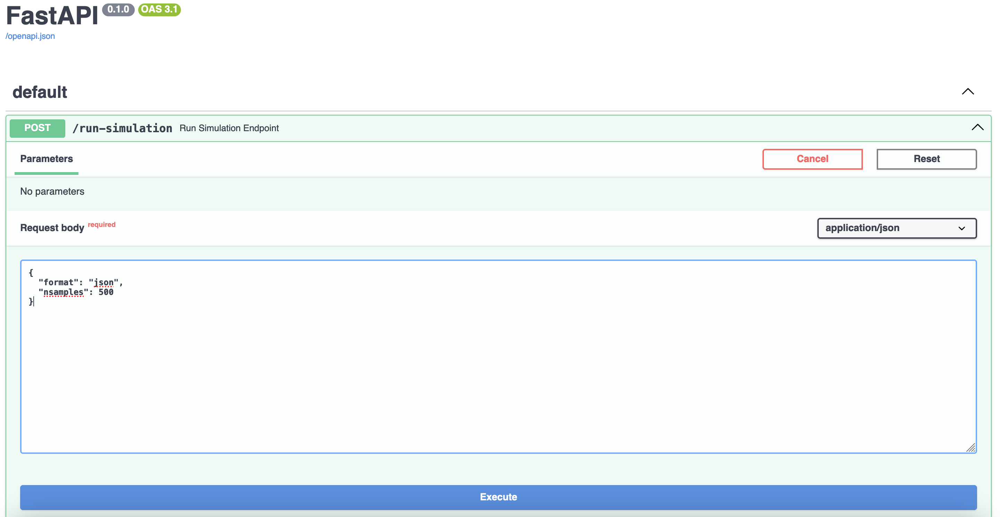
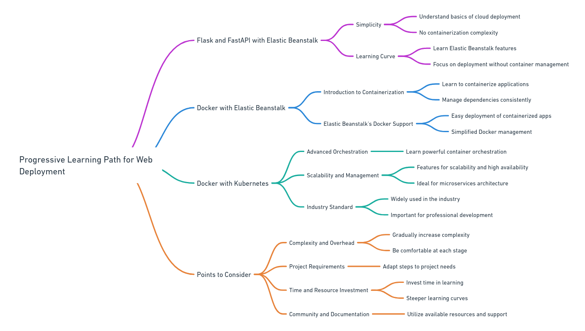

In the journey of mastering cloud computing,
one begins with utilizing lightweight web frameworks like Flask and FastAPI,
deploying them through AWS Elastic Beanstalk for an easier grasp
of application development without the complexity
of cloud infrastructure management.
Progressing to containerization,
the use of Docker with Elastic Beanstalk introduces
beginners to the basics of container management within the AWS ecosystem.
The next advanced step involves embracing Docker with Kubernetes,
delving into container orchestration to manage complex,
scalable, and highly available cloud services.


